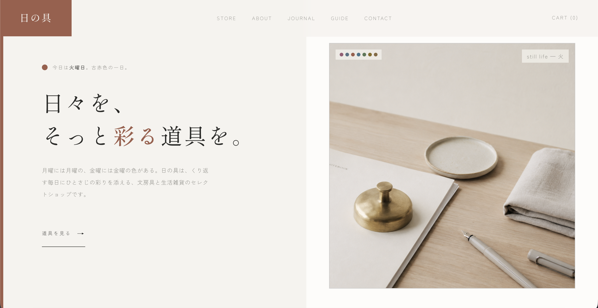

Web / Coding
文房具セレクトショップサイト「日の具」
「日々を彩る絵の具」をコンセプトにした、文房具・生活雑貨のセレクトショップサイト。月〜日の7曜日それぞれに古赤・水浅葱といった和の伝統色を割り当て、サイトを開いた曜日によってアクセントカラーが自動で切り替わる仕組みを実装しました。品揃えだけでなく、訪れるたびに表情の変わるサイト自体を楽しんでもらえるよう設計しています。
学校の課題や自主学習、コンテストを中心に取り組んだ作品をピックアップした作品一覧です。ポスター・ロゴ・キャラクター・Web まで、 ジャンルを横断してつくっています。画像をクリックすると拡大表示でき、サイトの場合は直接サイトへ飛ぶことができます。

「日々を彩る絵の具」をコンセプトにした、文房具・生活雑貨のセレクトショップサイト。月〜日の7曜日それぞれに古赤・水浅葱といった和の伝統色を割り当て、サイトを開いた曜日によってアクセントカラーが自動で切り替わる仕組みを実装しました。品揃えだけでなく、訪れるたびに表情の変わるサイト自体を楽しんでもらえるよう設計しています。

架空の日本酒ブランド「刻 -TOKI-」のブランドサイトを、デザインから実装まで制作しました。墨黒と金を基調に和の落ち着きと高級感を表現し、コーディングではAIも取り入れながら細部まで自分で仕上げています。

架空の抹茶ブランドのランディングページを、デザインから実装まで一貫して制作しました。抹茶を意識した緑の配色と高級感の両立を重視しました。
地形と水の記憶をテーマにした観光ポスター。上下を反転させた構図で“地と水”をひと続きに見せ、 一枚の中で土地の成り立ちを感じられるよう構成しました。
大学マスコットのキャラクター案。学びをテーマにしたモチーフを取り入れつつ、 親しみやすさと学生らしさのバランスを意識してデザインしました。
ドレスファッションショーのポスター制作。
山口県山口市の湯田温泉に伝わる白狐の物語を題材にしたポスター。土地に根ざした物語性を前面に出しました。